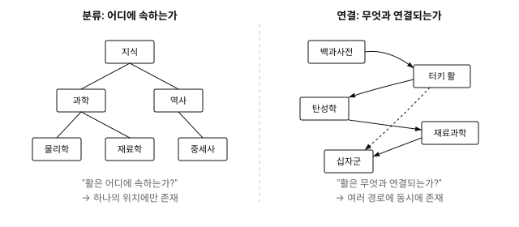
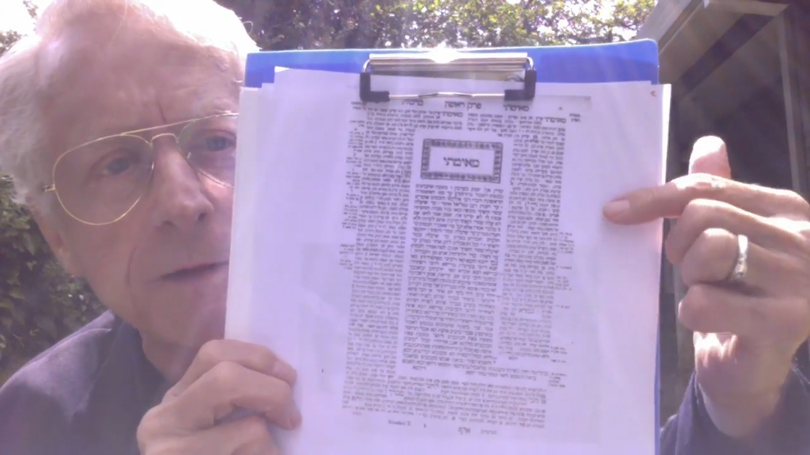
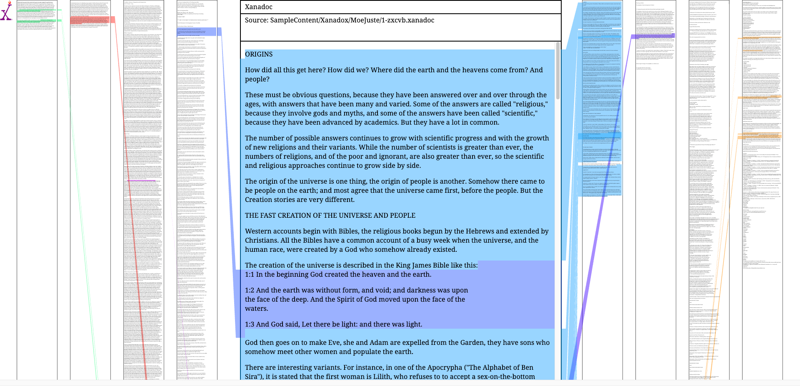

1945년 7월, 맨해튼 프로젝트에 참여했던 과학자이자 미국 과학연구개발국(OSRD) 국장이었던 바네바 부시(Vannevar Bush)는 《The Atlantic》에 한 편의 글을 투고했다. 6,000여명의 과학자를 동원해 원자폭탄을 만들어낸 프로젝트—그 이면에는 전례 없는 규모의 지식 생산이 있었다.
전쟁은 끝나가고 있었다. 부시의 관심은 이제 다른 곳을 향했다. 과학 지식은 폭발적으로 증가하고 있었지만, 정작 필요한 정보를 찾을 수 없었다. 멘델의 유전 법칙이 35년간 묻혀 있었던 것처럼,1 중요한 발견들이 쏟아지는 출판물 속에서 사라지고 있었다. 그는 글의 제목을 이렇게 붙였다. "As We May Think"—우리가 생각하는 방식에 대하여.2
비선형적 사고와 선형적 기술
연구자가 논문을 쓰는 상황을 상정해보자. 연구는 선형으로 진행되지 않는다. 하나의 논문을 읽다가 각주를 따라 다른 논문으로 넘어가고, 거기서 또 다른 맥락을 발견한다. 어떤 개념은 예상치 못한 분야와 연결되고, 어떤 질문은 처음 생각과 전혀 다른 방향으로 흘러간다. 탭은 수십 개가 열리고, 메모는 여기저기 흩어진다.
그러나 논문을 쓰는 순간, 이 모든 것은 하나의 선으로 정리된다. 서론에서 결론까지 이어지는 단일한 서사. 연구자는 비선형으로 사고하지만, 선형적으로 기술한다. 이때 무엇이 남는가. 하나의 서사만 남는다. 따라왔던 경로, 막다른 골목, 우연한 발견—이런 것들은 사라진다.
부시는 1945년에 이미 같은 질문을 던졌다. 사고의 흐름을 기록할 수 있는가. 경로 자체를 남길 수 있는가.
메멕스: 연상적 사고를 위한 기계
부시는 문제의 원인을 분류 체계 자체에서 찾았다. 당시의 정보 관리 방식은 계층적 분류에 의존하고 있었다. 그러나 그의 핵심 주장은 명확했다. "The human mind does not work that way. It operates by association."(인간의 사고는 그렇게 작동하지 않는다. 연상에 의해 작동한다.)2
글의 제목 "As We May Think"는 이 간극을 가리킨다. 우리가 실제로 생각하는 방식—연상에 의한 이동—을 정보 체계에 반영할 수 있는가. 부시가 제안한 '메멕스(Memex)'는 이 질문에 대한 답이었다. 메멕스는 실제로 만들어진 적 없는 가상의 장치로, 연상적 사고를 정보 체계에 반영한다는 개념을 가시화하기 위한 사고 실험이었다. 부시는 책상 크기의 기계를 상상했다. 마이크로필름에 저장된 책, 기록, 메모를 빠르게 불러올 수 있는 장치. 그러나 메멕스의 핵심은 저장이 아니라 연결이었다.
메멕스에서 사용자는 두 개의 문서를 나란히 펼쳐 놓고 읽다가, 그 사이의 관계를 발견하면 연결을 만든다. 이 연결은 문서 안에 각주처럼 붙지 않는다. 대신 메멕스 내부에 하나의 경로(trail)로 저장된다. A에서 B로, B에서 C로 이어지는 이 경로는 단순한 참고 목록이 아니라, 사용자가 따라온 사고의 흐름이다.
며칠 뒤, 사용자는 다시 그 경로를 불러올 수 있다. 버튼을 누르면 문서는 이전에 설정된 순서대로 나타난다. 그는 더 이상 정보를 찾고 있는 것이 아니라, 과거의 자신이 만들어둔 사고의 길을 다시 따라가고 있는 것이다. 부시는 이 경로를 다른 사람에게 전달할 수도 있다고 상상했다. 경로 자체가 하나의 지식 단위가 되는 것이다.
연결: 분류의 확장, 동시성의 획득
그렇다면 왜 분류가 문제인가. 부시는 이렇게 썼다. "저장된 정보는 하나의 위치에만 놓일 수 있고, 새로운 경로로 가려면 시스템을 빠져나와 다시 진입해야 한다."2 그는 연상적 사고의 예시로 '터키 활(Turkish bow)'을 들었다. 터키 활을 연구하는 사람은 도서관에서 '무기'로 분류된 서가를 찾아가야 했다. 그러나 활의 '탄성'을 이해하려면 물리학 서가로, '십자군 전쟁과의 관계'를 알려면 역사 서가로 이동해야 한다. 하나의 대상이 여러 속성을 갖고 있다면 여러 위치에 존재해야 마땅하지만, 물리적 분류 체계에서 활은 하나의 위치에만 존재할 수 있다. 연구자는 서가와 서가 사이를 오가며, 자신의 머릿속에서만 연결을 만들어야 했다.

메멕스의 '경로'는 이 한계를 우회한다. 활은 탄성학과 연결되고, 재료과학과 연결되고, 십자군과 연결된다—동시에. '분류'가 "어디에 속하는가"를 묻는다면, '연결'은 "무엇과 관계하는가"를 묻는다. 연결은 분류를 대체하지 않지만, 분류가 담당하지 못한 새로운 차원을 추가할 수 있다. 앞선 글 ↬에서 살펴본 버너스리의 다이어그램도 같은 방향이었다. 링크는 단순한 연결이 아니라 관계의 의미를 기록하는 것이다.
하이퍼텍스트: 선형을 넘어서
30년 후, 테드 넬슨(Ted Nelson)은 이 통찰에 이름을 붙였다. "모든 것은 깊이 얽혀 있다(Everything is deeply intertwingled)." 1960년 하버드 대학원에서 사회학을 전공하던 그는 컴퓨터 수업을 들으며 같은 문제를 마주했다. 철학과 영화 제작을 거쳐온 그는 종이가 아닌 화면, 순서가 아닌 연결을 위한 새로운 문서를 구상하기 시작했다. 그는 지식을 주제별로 나눌 수 있다는 생각 자체를 거부했다. "구텐베르크 이후 유행한 계층적, 순차적 구조는 대개 강요되고 인위적인 것이다."3
1965년, 넬슨은 새로운 단어를 만들었다. 하이퍼텍스트(hypertext). "hyper-"는 그리스어로 "넘어서(beyond)"를 뜻한다. 넬슨은 이렇게 정의했다. 분기하고, 독자에게 선택지를 주는, 비순차적 글쓰기(non-sequential writing).
넬슨은 이 아이디어를 자나두(Xanadu) 프로젝트로 발전시켰다.4 자나두는 "세계의 문헌적 지식을 점진적으로 포함하며 무한히 성장하는 시스템(gradually including more and more of the world's written knowledge)"을 목표로 했다.5 넬슨이 구상한 것은 단순한 링크가 아니었다. 문서 사이의 연결이 시각적으로 드러나고(visible connection), 인용의 출처가 추적되며, 링크가 끊어지지 않는 시스템. 그는 이를 '트랜스클루전(transclusion)'이라 불렀다. 복사가 아닌 참조. 원본은 그대로 유지되고, 인용된 곳에서 원문의 맥락을 즉시 확인할 수 있다. 기록학에서 말하는 출처주의(provenance)와 같은 문제—원본과 맥락의 보존—를 디지털에서 다루려 한 것이다.


1989년, 팀 버너스리는 하이퍼텍스트를 웹에서 구현했다. 그러나 그것은 넬슨이 구상한 것의 일부였다. 웹의 링크는 한 방향으로만 작동하고, 연결은 보이지 않으며, 링크는 끊어진다. 넬슨은 이렇게 썼다. "월드 와이드 웹은 우리가 막으려 했던 바로 그것이었다—끊어지는 링크, 한 방향으로만 나가는 링크, 출처를 따라갈 수 없는 인용, 버전 관리도 없고 권리 관리도 없는."4 HTML의 <a> 태그—anchor, 닻—는 연결을 구현했지만, 연결의 가시성은 구현하지 못했다.
그럼에도 하이퍼링크는 무언가를 바꾸었다. 클릭 한 번으로 우리는 저자가 정해놓은 순서를 벗어난다. 부시의 메멕스가 연상적 색인(associative indexing)을 제안하고, 넬슨의 하이퍼텍스트가 그것에 이름을 붙였다면, 웹은 그것을—비록 불완전하게나마—모두의 손에 쥐어주었다.
최근 링크드 데이터(Linked Data) 연구는 이 가능성을 구체화하고 있다. 기록학자 애슐리 호킨스(Ashleigh Hawkins, 2022)는 디지털 아카이브가 이미지나 문서 파일만 제공하는 현재 방식의 한계를 지적한다.6 연구자들이 필요로 하는 것은 파일이 아니라 관계다. 링크드 데이터는 서로 다른 컬렉션에 흩어진 기록들 사이의 "이전에는 드러나지 않던 관계"를 가시화한다. 한 인물이 여러 기관의 기록에 등장할 때, 그 연결이 드러나는 것이다. 그러나 여전히 부족하다. 윈터스와 프레스콧(Winters & Prescott, 2019)도 지적했듯, 검색만으로는 맥락과 관계를 충분히 포착할 수 없다.7
연결이 드러내는 것
연결은 분류를 대체하지 않는다. 확장한다. 분류가 "어디에 속하는가"를 묻는다면, 연결은 "무엇과 관계하는가"를 묻는다. 부시의 메멕스, 넬슨의 하이퍼텍스트, 버너스리의 웹—80년에 걸친 시도는 같은 방향을 향했다. 사고의 경로를 기록으로 남기는 것.
그러나 웹의 링크는 여전히 "어둠 속으로의 다이빙대"다.89 연결은 보이지 않고, 경로는 남지 않는다. 우리는 연결 위에서 사고하지만, 기록은 여전히 선형으로 남는다. 연결이 보이는 글쓰기, 경로가 남는 기록—아직 도래하지 않은 형식이다.
주석
- 그레고어 멘델(Gregor Mendel)은 1866년 브륀 자연사학회 학술지에 완두콩 교배 실험 결과를 발표했다. 그러나 이 논문은 34년간 거의 주목받지 못했다. 1900년, 휘호 드 브리스(Hugo de Vries), 카를 코렌스(Carl Correns), 에리히 폰 체르마크(Erich von Tschermak)가 각자의 연구를 진행하다 멘델의 논문을 독립적으로 재발견했다. 부시는 이 사례를 정보 검색 시스템 실패의 대표적 예로 인용했다. "멘델의 유전학 개념은 한 세대 동안 세계에서 사라졌다. 그의 출판물이 이를 이해하고 확장할 수 있는 소수에게 도달하지 못했기 때문이다." 참고: van Dijk, P.J., Jessop, A.P. & Ellis, T.H.N. (2022). How did Mendel arrive at his discoveries? Nature Genetics, 54, 926-933. https://doi.org/10.1038/s41588-022-01109-9 ↩
- Bush, V. (1945). As We May Think. The Atlantic. https://www.theatlantic.com/magazine/archive/1945/07/as-we-may-think/303881/ ↩
- Nelson, T. H. (1974). Computer Lib/Dream Machines. Self-published. 1987년 개정판: Microsoft Press. ↩
- Nelson, T. H. The Xanadu Parallel Universe. Project Xanadu. https://xanadu.com/xUniverse-D6 ↩
- Nelson, T. H. (1965). Complex Information Processing: A File Structure for the Complex, the Changing and the Indeterminate. Proceedings of the 1965 20th National Conference, ACM. https://dl.acm.org/doi/10.1145/800197.806036 ↩
- Hawkins, A. (2022). Archives, linked data and the digital humanities: increasing access to digitised and born-digital archives via the semantic web. Archival Science, 22, 319-344. https://doi.org/10.1007/s10502-021-09381-0 ↩
- Winters, J. & Prescott, A. (2019). Negotiating the born-digital: a problem of search. Archives and Manuscripts, 47(3), 391-403. ↩
- "We propose a new kind of writing— parallel pages, visibly connected." Project Xanadu. https://xanadu.com/ ↩
- Nelson, T. H. (2018). Xanadu Basics 1a - VISIBLE CONNECTION. YouTube. https://www.youtube.com/watch?v=hMKy52Intac ↩
태그
#웹 #하이퍼텍스트 #메멕스 #연결연재 정보
이 글은 〈웹 이후의 기록학〉 6부작 연재 시리즈 입니다.
- #1: 웹은 처음부터 아카이브였다
- #2: 하이퍼텍스트라는 새로운 분류
- #3–#6: 계속